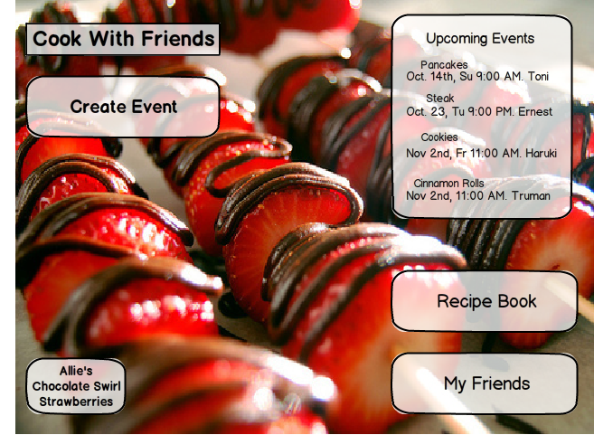

Fallera - Social Cooking
Human Factors Interface Design, Fall 2012

For Idea Development, we first looked at our design ideas, considering which ones most-helped our primary persona. We decided on a design that helped our user plan and keep track of upcoming events. We also were interested in including a social aspect of the app, which was inspired by Abby's large network of friends and her. Need to keep track of them. Within her network of friends are groups of friends. For example, Abby has friends from Church, her Political Science Study group, and her friends from the ESL program she volunteers at. Abby sees cooking and baking as a great way to take a break from schoolwork, and does so often. Sometimes she does not make time for all of them, so having a way to keep track of what groups of friends she has made commitments to cook with, she can feel comfortable, knowing she is staying in touch. The center of this interaction was a friends page where she can see her friends, presented in groups. This also makes scheduling events with groups of friends easier, and there is built-in communication between friends on the planning page for the event to generate excitement and organization. Another advantage of a group page would be that it would provide a place for people to figure out who will bring what The possibility of a socially-oriented tablet app for social cooking was really interesting to us, but the reality is that facebook is where people interact socially online. Furthermore, the main goal of our tablet app is for people to cook in person and interact that way, so we focused our design on that, which is reflected in our design. The mainpage contains five main components: a create event button, a list of upcoming events, a link to a recipe book, and a link to my friends.
The usability test we are conducting today will help us learn how to improve the usability of our paper prototyped interface design. We will ask you to complete several tasks. Please think aloud as you work through the tasks. Do now worry about making mistakes, since that will be particularly helpful to us in learning which aspects of our design need improvement. Remember you are free to change your mind about the study at any point if you feel uncomfortable.
This paper prototype represents a tablet application for social cooking. One of us will be simulating the computer. You can use your finger to touch buttons, click on links, scroll through pictures, or anything else you might do with an app. For example, if I click on “Create an Event,” the computer takes me to the “Create an Event” page. To simulate typing, I can write in this text box with a pen. If I click “Cancel,” the computer takes me back to the front page.
You want to schedule a cooking event with some friends for next weekend. You go to your social cooking app. This is the front page.
Now you’d like to schedule the actual event. You should title the event “Dessert Party!” You decide to make chocolate swirl strawberries with your friends Allie, Dierdre, and Joe on Monday, October 1 at 2:30pm. The location is your house. Please create an event with this information.
You feel like making dessert, so you look at some of the dessert recipes in your recipe countertop. Please find the dessert recipe that requires the least amount of time. Then return to the home page.
Yesterday you met a new colleague at work, and over lunch you discovered a common interest in good food. You decide to add him to your social cooking app. Please navigate to the “My Friends” page and add your new friend. His name is Adam Brown, and his email address is adam.brown@gmail.com. Then return to the home page.
You receive a new event notification on the timeline, and you want to see who invited you and what the event is. Then accept the invitation.
Thank you so much for helping us test our prototype! We can show you how we intended the interface to work. We have also recorded any questions or issues that arose during the interview, and will address those now.